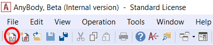
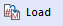
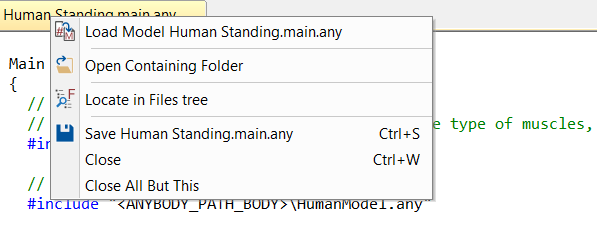

Lesson 1: Creating a Standing Model¶
The standing model can be found in the AMMR folder under Applications/Examples. The main file is called StandingModel.Main.any.
While a main file can be opened with the “File->Open” menu in AnyBody, do not do this! This tutorial will teach you an easier way to use StandingModel as a starting template.
Key (modifiable) features of the standing model are:
- Both feet are always connected to the ground.
- The posture is defined by the joint angles for all major joints except the ankles.
- The model automatically balances itself by maintaining its center of mass vertically above the ankle joints. E.g., if the arms move forward, the entire body moves backwards to maintain the balance.
- External forces can be applied to predefined nodes on the model. Muscle forces may change, to resist these forces and maintain balance.
Model templates¶
To create a new standing model using the template model in the AMMR, click the “Create New from template” button  in the toolbar:
in the toolbar:

The Template dialogue opens and displays a list of pre-defined templates supported in the AMMR.
Choose the “Human Standing” template and select the folder you want to save your new Human Standing model in. To demonstrate, let us save the model in the ‘AnyBody.7.1.x/AMMR.v2.1.0-Demo’ directory which we extracted in the introduction of this tutorial.
Give the model a name, for example MyStandingHuman, and press OK to save.

Your new ‘MyStandingHuman.main.any’ file opens in the script Editor. The location of the file is shown in the title bar:

Warning
If you saved your model in an other location be
sure to modify the ../libdef.any file so it points
to AMMR repository you want to use.
Loading a model¶
To see the 3D graphical representation of the model you need to load.
Load/reload is a frequent operation and has been assigned to function key F7. You may also load your model by clicking  in the toolbar.
This action will load whatever file is chosen in the text editor. If a file is already loaded, the above action will simply reload the file until you give another file loading priority by right-clicking its tab and select “Load Model”.

The model view¶
When loading is completed, the Model View window opens and shows the standing model: (You can open it manually from View -> Model Views).

The icons in the toolbar at the top of the Model View window allow you to modify the image: zoom, pan, rotate, etc. They should be mostly self-explanatory. Now is a good time to play a bit around with them and to familiarize yourself with the options.
In practical use it is often necessary to change quickly between these functions, so keyboard shortcuts have been provided:
- The Ctrl button activates the Pan function.
- The Shift button activates the Zoom function.
- The Ctrl-Shift combination activates the rotation function.
- If you have a scrolling wheel on your mouse, this will zoom the model in and out.
See also
You can now proceed to Lesson 2: Controlling the Posture.